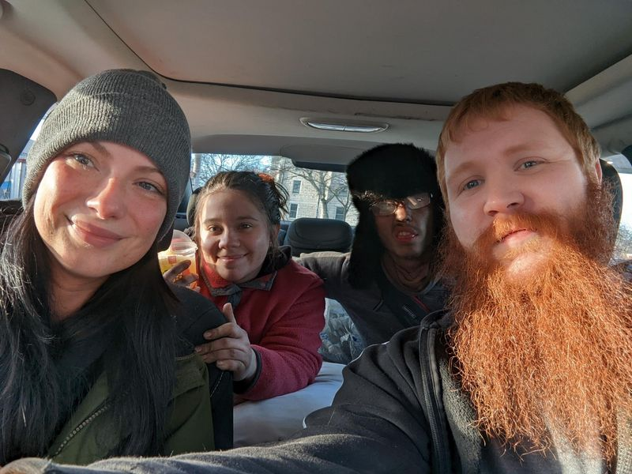

Timeline photos
MANY people ask me "why do you do it, Sage? Why do you shelter these people and give so much to them?"
THIS IS WHY!!
The 2 people in the front are Alicia and Jozef. They are taking the 2 people in the back, Aubrey and Cole nearly 800 miles to Aubrey's family so she can have a place to live and have her baby. Aubrey and Cole lived with us (up until today) in a tent at the Houseless Movement Garden. Aubrey's baby is due in April.
You maybe have never heard of Alicia and Jozef. They haven't made big pleas on social media, they haven't started any GofundMe's. They just show up week after week after week building doors, helping with our furnace, coming up with new ideas and concepts to help homeless people.
And this is the truth of it all. For every guy like me on social media there is a massive iceberg of good people under the radar doing the most profoundly amazing things. They don't want any glory. They don't want any recognition. They just like doing the work.
And the work they do is truly monumental.
The only question I ever ask myself is: "With people like Alicia and Jozef doing the most amazing work, HOW CAN I NOT keep helping?"